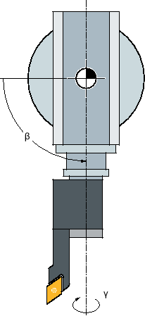

During simulation, the current program is calculated in its entirety and the result is displayed in graphical form. The result of programming is verified without traversing the machine axes. Incorrectly programmed machining steps are detected at an early stage and incorrect machining on the workpiece is prevented.
Graphical display
The simulation uses the correct proportions of the workpiece, tools, chuck, counterspindle and tailstock for the screen display.
For the spindle chuck and the tailstock, dimensions are used that are entered into the "Spindle Chuck Data" window.
For non-cylindrical blanks, the chuck closes up to the contour of the cube or polygon.
Depth display
The depth infeed is color-coded. The depth display indicates the depth level at which machining is currently taking place. "The deeper, the darker" applies for the depth display.
Defining a blank
The blank dimensions that are entered in the program editor are used for the workpiece.
The blank is clamped with reference to the coordinate system, which is valid at the time the blank was defined. This means that before defining the blank in G code programs, the required output conditions must be established, e.g. by selecting a suitable work offset.
Programming a blank (example)
G54 G17 G90WORKPIECE(,,,"Cylinder",112.0,-50,-80.00,155,100)T="NC-SPOTDRILL_D16
MCS references
The simulation is implemented as workpiece simulation. This means that it is not assumed that the work offset has already been precisely scratched or is known. In spite of this, unavoidable MCS references are in the programming, such as for example, the tool change point in the MCS, the park position for the counterspindle in the MCS or the position of the counterspindle slide. Depending on the current work offset - in the worst case - these machine references can mean that collisions are shown in the simulation that would not occur for a realistic work offset - or vice versa, collisions are not shown, which could occur for a realistic work offset. This is the reason why in ShopTurn programs, in the case of a simulation, the program header calculates an appropriate work offset for the main spindle - or where relevant for the counterspindle - from the specified chuck dimensions.
Programmable frames
All frames and work offsets are taken into account in the simulation.
| Note |
Manually swiveled axesNote that swivel movement in simulation and during simultaneous recording is also displayed when the axes are swiveled manually at the start. |
Display of the traversing paths
The traversing paths of the tool are shown in color. Rapid traverse is red and the feedrate is green.
| Note |
Displaying the tailstockThe tailstock is only visible with the option "ShopMill/ShopTurn". |
| | Machine manufacturer Please observe the information provided by the machine manufacturer. |
Simulation display
You can choose one of the following types of display:
Material removal simulation
During simulation or simultaneous recording you can follow stock removal from the defined blank.
Path display
You have the option of including the display of the path. The programmed tool path is displayed.
Note Tool display in the simulation and for simultaneous recording
In order that workpiece simulation is also possible for tools that have either not been measured or have been incompletely entered, certain assumptions are made regarding the tool geometry.
For instance, the length of a miller or drill is set to a value proportional to the tool radius so that cutting can be simulated.
Note Inaccurate display for tools with large radii
The display of the tool cutting edge depends on the radius set in the tool parameters. The greater the radius, the more rounded the cutting edge is displayed in the simulation and further the traversing path (= center point path) is away from the machined contour.
Because of these inaccuracies in the graphic display, it may appear in the simulation that no material is removed during the machining.
Note Thread turns not displayed
For thread and drill thread milling, the thread turns are not displayed in the simulation and for simultaneous recording.
Display variants
You can choose between three variants of graphical display:
Simulation before machining of the workpiece
Before machining the workpiece on the machine, you can perform a quick run-through in order to graphically display how the program will be executed.
Simultaneous recording before machining of the workpiece
Before machining the workpiece on the machine, you can graphically display how the program will be executed during the program test and dry run feedrate. The machine axes do not move if you have selected "no axis motion".
Simultaneous recording during machining of the workpiece
You can follow machining of the workpiece on the screen while the program is being executed on the machine.
Views
The following views are available for all three variants:
Side view
Half section
Front view
3D view
2-window
| Note |
Simulation in half-section viewThe "half-section" view in the simulation allows a more precise observation of the internal turning operations. This view was not conceived for monitoring milling operations. The display of milling operations can lead to excessive simulation times. |
Status display
The current axis coordinates, the override, the current tool with cutting edge, the current program block, the feedrate and the machining time are displayed.
In all views, a clock is displayed during graphical processing. The machining time is displayed in hours, minutes and seconds. It is approximately equal to the time that the program requires for processing including the tool change.
Determining the program runtime
The program runtime is determined when executing the simulation. The program runtime is temporarily displayed in the editor at the end of the program.
Model quality
The processing speed and total duration of a program in simulation partly depends on the quality and complexity of the model used. By reducing the optical quality, a shorter simulation time can be achieved under certain circumstances. You can set the model quality for simulation according to your requirements in the interface.
The following table shows which model quality options are available depending on the SINUMERIK ONE version:
SINUMERIK ONE version | Available options |
|---|---|
SINUMERIK Operate on NCU 1740 |
|
SINUMERIK Operate on NCU 1750 |
|
SINUMERIK Operate on NCU 1760 |
|
SINUMERIK Operate on IPC |
|
Properties of simultaneous recording and simulation
Traversing paths
For the simulation, the displayed traversing paths are saved in a ring buffer. If this buffer is full, then the oldest traversing path is deleted with each new traversing path.
Optimum display
If simultaneous machining is stopped or has been completed, the display is again converted into a high-resolution image. In some cases, this is not possible. In this case, the following message is output: "High-resolution image cannot be generated".
Working zone limitation
No working area limits and software limit switches are effective in the tool simulation.
Start position for simulation and simultaneous recording
During simulation, the start position is converted via the work offset to the workpiece coordinate system.
The simultaneous recording starts at the position at which the machine is currently located.
Constraint
Referencing: G74 from a program run does not function.
Alarm 15110 "REORG block not possible" is not displayed.
Compile cycles are only partly supported.
No PLC support.
Axis containers are not supported.
Swivel tables with non-swiveling offset vectors are not supported.
Supplementary conditions
All of the existing data records (tool carrier / TRAORI, TRANSMIT, TRACYL) are evaluated and must be correctly commissioned for correct simulation.
Transformations with swiveled linear axis (TRAORI 64 - 69) as well as OEM transformations (TRAORI 4096 - 4098) are not supported.
Changes to the tool carrier or transformation data only become effective after Power On.
Transformation change and swivel data record change are supported. However, a real kinematic change is not supported, where a swivel head is physically changed.
The simulation of mold making programs with extremely short block change times can take longer than machining, as the computation time distribution for this application is dimensioned in favor of the machining and to the detriment of simulation.
Example
An example for supported kinematics is a lathe with B axis:
